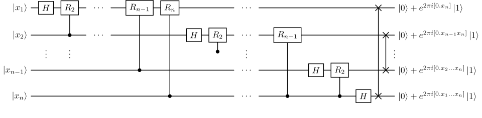

Noisy quantum computer
With the states and operators defined by this package, we can describe the execution of a circuit on a noisy quantum computer.
We will run a circuit implementing the quantum Fourier transform on \(N=5\) qubits, as in the following picture.

We will use Hadamard gates and controlled phase gates \(R_k\) for \(k \in \{2, \dotsc, N\}\). All these gates are already defined in ITensor. (We follow the ITensor convention where the first site denotes the control qubit.)
Let's first look how the circuit would be implemented in the noiseless case, acting on a pure state. We create \(N\) sites with the "Qubit" site type, the initial zero state, then we apply the gates in the required sequence.
julia> N = 5; s = siteinds("Qubit", N);
julia> ψ = MPS(s, "0");
julia> gate_subseq(k, N) = [
op("H", s[k]);
[op("Cphase", s[k+n], s[k]; ϕ=2pi/(2^(n+1))) for n in 1:(N-k)]...
];
julia> gate_seq = vcat([gate_subseq(k, N) for k in 1:N]...);
Executing the circuit is just a matter of calling apply on the MPS with the list of gates.
julia> ψₒᵤₜ = apply(gate_seq, ψ)
5-element MPS:
((dim=2|id=430|"Qubit,Site,n=1"), (dim=2|id=33|"Link,l=1"))
((dim=2|id=174|"Qubit,Site,n=2"), (dim=2|id=33|"Link,l=1"), (dim=4|id=719|"Link,l=2"))
((dim=2|id=263|"Qubit,Site,n=3"), (dim=4|id=719|"Link,l=2"), (dim=4|id=80|"Link,l=3"))
((dim=2|id=197|"Qubit,Site,n=4"), (dim=4|id=80|"Link,l=3"), (dim=2|id=924|"Link,l=4"))
((dim=2|id=705|"Qubit,Site,n=5"), (dim=2|id=924|"Link,l=4"))
Let's do the same, but with a density matrix. We will start by running the noiseless circuit, just to get a feeling of how it can be done.
julia> s_vec = siteinds("vQubit", N);
julia> ρ = MPS(s_vec, "0");
julia> gate_subseq_vec(k, N) = [
adjointmap_itensor("H", s_vec[k]);
[adjointmap_itensor("Cphase", s_vec[k+n], s_vec[k]; ϕ=2pi/(2^(n+1)))
for n in 1:(N-k)]...
];
julia> gate_seq_vec = vcat([gate_subseq_vec(k, N) for k in 1:N]...);
julia> ρₒᵤₜ = apply(gate_seq_vec, ρ)
5-element MPS:
((dim=4|id=51|"Site,n=1,vQubit"), (dim=4|id=492|"Link,l=1"))
((dim=4|id=479|"Site,n=2,vQubit"), (dim=4|id=492|"Link,l=1"), (dim=16|id=858|"Link,l=2"))
((dim=4|id=696|"Site,n=3,vQubit"), (dim=16|id=858|"Link,l=2"), (dim=16|id=302|"Link,l=3"))
((dim=4|id=818|"Site,n=4,vQubit"), (dim=16|id=302|"Link,l=3"), (dim=4|id=298|"Link,l=4"))
((dim=4|id=720|"Site,n=5,vQubit"), (dim=4|id=298|"Link,l=4"))
Since the gates act on the density matrix \(\rho\) as \(X\rho\adj{X}\), we have replaced the op function in gate_seq with adjointmap_itensor, a function defined in this package that returns a tensor representing the (vectorisation of the) map \(\rho \mapsto X\rho\adj{X}\) for a given \(X\).
We can check that the two results are the same state by using the vec_projector function, that turns the MPS of a pure state \(\ket\psi\) into the MPS of the vectorisation of \(\proj\psi\):
julia> vec_ψₒᵤₜ = vec_projector(ψₒᵤₜ; existing_sites=siteinds(ρₒᵤₜ))
5-element MPS:
((dim=1|id=453|"Link,l=1"), (dim=4|id=51|"Site,n=1,vQubit"))
((dim=1|id=973|"Link,l=2"), (dim=1|id=453|"Link,l=1"), (dim=4|id=479|"Site,n=2,vQubit"))
((dim=1|id=490|"Link,l=3"), (dim=1|id=973|"Link,l=2"), (dim=4|id=696|"Site,n=3,vQubit"))
((dim=1|id=404|"Link,l=4"), (dim=1|id=490|"Link,l=3"), (dim=4|id=818|"Site,n=4,vQubit"))
((dim=1|id=404|"Link,l=4"), (dim=4|id=720|"Site,n=5,vQubit"))
julia> vec_ψₒᵤₜ ≈ ρₒᵤₜ
true
Let's also check that the trace of the state has actually been preserved, and that it is still a pure state. For the trace, we define an appropriate function like in the GKSL equation example, while the purity is given by the 2-norm of the MPS, since \(\tr(\rho^2)\) corresponds to the inner product of \(\rho\) with itself. (We cut the imaginary part away since we know that it is supposed to be zero, but we check it anyway in case something goes wrong.)
julia> function trace(x::MPS)
t = dot(MPS(siteinds(x), "Id"), x)
t ≈ real(t) || @warn "Trace is not real"
return real(t)
end;
julia> function purity(x::MPS)
p = dot(x, x);
p ≈ real(p) || @warn "Purity is not real"
return real(p)
end;
julia> trace(ρₒᵤₜ) ≈ 1
true
julia> purity(ρₒᵤₜ) ≈ 1
true
Now we add a depolarising noise channel after each gate, acting locally on the qubits affected by the gate. We use its Kraus decomposition
\[\begin{gather*} D_\lambda(\rho) = \sum_{i=0}^{3} K_i\phantomadj \rho \adj{K_i},\\ K_0 = \sqrt{1-\frac{3\lambda}{4}} \imat[2],\quad K_1 = \sqrt{\frac{\lambda}{4}} \sigma_x,\quad K_2 = \sqrt{\frac{\lambda}{4}} \sigma_y,\quad K_3 = \sqrt{\frac{\lambda}{4}} \sigma_z. \end{gather*}\]
and arbitrarily choose \(\lambda=0.05\).
julia> function depolarising_ch(λ, s::Index)
@assert 0 ≤ λ ≤ 1 + 1/3
return (1 - 3λ/4) * op("Id", s) +
λ/4 * adjointmap_itensor("X", s) +
λ/4 * adjointmap_itensor("Y", s) +
λ/4 * adjointmap_itensor("Z", s)
end;
julia> noise = [reduce(*, depolarising_ch(0.05, si) for si in gate_sites)
for gate_sites in inds.(gate_seq_vec; tags="Site", plev=0)];
We built the noise list by getting the site indices of each gate (gate_sites) and then taking the product of a depolarising channel on each of those sites.
We now combine the gate_seq_vec and the noise operators, alternating them:
julia> gate_seq_vec_noisy = collect(Iterators.flatten(zip(gate_seq_vec, noise)));
julia> ρₒᵤₜ_noisy = apply(gate_seq_vec_noisy, ρ)
5-element MPS:
((dim=4|id=51|"Site,n=1,vQubit"), (dim=4|id=492|"Link,l=1"))
((dim=4|id=479|"Site,n=2,vQubit"), (dim=4|id=492|"Link,l=1"), (dim=16|id=858|"Link,l=2"))
((dim=4|id=696|"Site,n=3,vQubit"), (dim=16|id=858|"Link,l=2"), (dim=16|id=302|"Link,l=3"))
((dim=4|id=818|"Site,n=4,vQubit"), (dim=16|id=302|"Link,l=3"), (dim=4|id=298|"Link,l=4"))
((dim=4|id=720|"Site,n=5,vQubit"), (dim=4|id=298|"Link,l=4"))
Now the purity of the state has decreased, as a consequence of the noise, while its trace is still, of course, 1.
julia> trace(ρₒᵤₜ_noisy) ≈ 1
true
julia> purity(ρₒᵤₜ_noisy)
0.32053886090015327